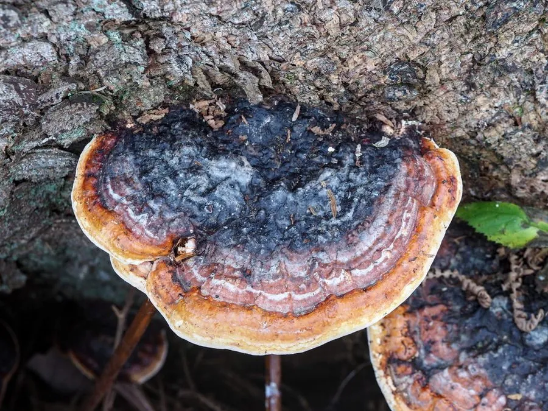

真菌 · 真菌界
红缘拟层孔菌 Fomitopsis pinicola

拟层孔菌科多年生木腐菌，菌盖马蹄形、具红色环带与白色边缘，生于针叶树枯木，引起褐色腐朽，不可食用。
- 分类
- 门担子菌门纲伞菌纲目多孔菌目科拟层孔菌科属拟层孔菌属
- 栖息环境
- 北半球温带针叶林的枯立木与倒木上，引起木材褐色腐朽
- 地理分布
- 北半球温带广布，中国东北、华北、西南、西北林区常见
- 保护级别
- IUCN 暂无评估；分布广，种群稳定
物种志
红缘拟层孔菌的子实体多年生，木质至木栓质，菌盖马蹄形至半圆形，宽 5–30 厘米，表面灰褐色至黑褐色，近边缘有一条鲜红至橙红色的环带，边缘白色、钝圆。菌肉淡黄褐色，木栓质；菌管多层，孔口圆形，白色至淡黄色。孢子印白色，孢子椭圆形，光滑无色。
本种广泛分布于北半球温带针叶林，生于云杉、冷杉、松树等针叶树的枯立木与倒木上，引起木材褐色块状腐朽，是森林中重要的分解者。它多年生，每年新增一层菌管，可通过菌管层数粗略判断年龄。红缘拟层孔菌木质坚硬，不可食用；其多糖提取物在研究中显示出免疫调节与抗肿瘤活性，但野生菌不可自行入药。
形态与习性
- 菌盖马蹄形，宽 5–30 厘米，具红色环带
- 菌管多层，孔口白色至淡黄色
- 孢子印白色，孢子椭圆形、光滑
- 生境针叶树枯立木与倒木，引起褐色腐朽
- 食用性木质坚硬，不可食用
- 药用多糖有免疫调节研究价值，不可自行入药
趣味知识
- 红缘拟层孔菌的菌盖边缘有一圈鲜红色环带，是它最醒目的识别特征。
- 它多年生，每年增加一层菌管，菌管层数可以粗略反映年龄。
- 它专门分解针叶树木材，引起褐色块状腐朽，是森林碳循环的重要参与者。
- 虽然木质坚硬不能吃，但它的多糖成分在免疫调节研究中受到关注。